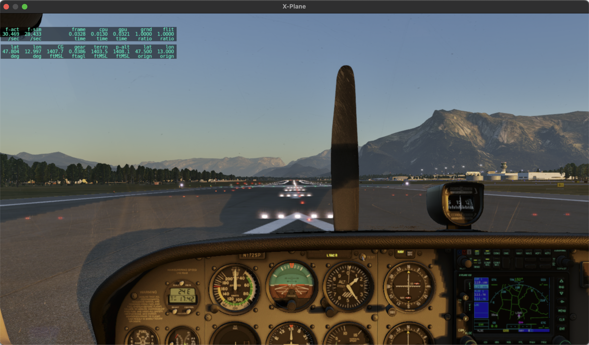
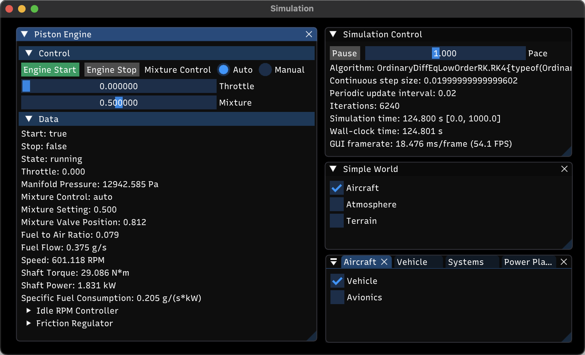

Interactive Simulation
This tutorial shows how to set up and run an interactive aircraft simulation. You will be able to control it through the built-in GUI and, optionally, use the free X-Plane 12 demo for 3D visualization.
Setting Up X-Plane 12
Download, install and run the X-Plane 12 demo. If you happen to have the full version, you can use it instead. Since we will be running X-Plane simply as an external visualization tool, we only need to set up a few things; for further help, check out the X-Plane 12 manual.
If you can't run X-Plane 12 (which might happen for instance if you have an Intel integrated graphics chip), you can skip this section. Your visuals will be limited to the built-in GUI, but everything else should still work.
From the main menu, click on New Flight. Select the Cessna Skyhawk as your aircraft and Salzburg (LOWS) as your initial location. Start the flight.

Once X-Plane is done loading, move the mouse to the top of the screen to bring up the menu bar. Click on the Settings icon and go the Network tab. Make sure Accept incoming connections is enabled. Then, under the UDP Ports section, check the Port we receive on (legacy) value. The default is 49000, but you can use a different one if you need to. Finally, if you are running X-Plane on a different machine than your Julia session, note its IP address.

Now go to the Graphics tab. Unless you have a multi-monitor setup, you will probably want to run X-Plane in windowed mode. This will allow you to keep it on screen along with the Flight.jl built-in GUI. To enable windowed mode, select Windowed Simulator in the Monitor usage drop-down.

You might also want to experiment with the quality settings until you achieve a comfortable framerate. To display the framerate on screen, go to the Data Output tab, find the Framerate entry in the table and enable the Show in cockpit option.

To switch to an external camera, press Shift+4. You can right click and drag to rotate the view and use the mouse wheel to zoom in and out. To return to the cockpit camera, press Shift+0.

This concludes our X-Plane setup, now let's move on to Julia.
Setting Up the Flight.jl Simulation
To work through this tutorial, you will need to start Julia with multiple threads enabled.
Let's begin by initializing the package:
using FlightNext, we need to define a 2D location and orthometric elevation for the beginning of Salzburg airport's runway 15, as well as the runway's geographic heading:
loc_LOWS15 = LatLon(ϕ = deg2rad(47.80433), λ = deg2rad(12.997))
h_LOWS15 = HOrth(427.2)
ψ_LOWS15 = deg2rad(157)The above values will result in X-Plane displaying the aircraft properly positioned and aligned on the runway centerline at the beginning of the simulation. However, this is just for aesthetics, since our simulation's physics are totally independent from X-Plane's terrain mesh. This disconnect will become apparent as soon as the aircraft starts rolling down the runway.
Now, let's create our simulated world:
aircraft = Cessna172Xv1()
atmosphere = SimpleAtmosphere()
terrain = HorizontalTerrain(h_LOWS15)
world = SimpleWorld(aircraft, atmosphere, terrain)SimpleAtmosphere provides a basic, ISA-based atmosphere with customizable sea-level conditions and wind velocity. HorizontalTerrain represents a surface with constant orthometric elevation, which we have set to our value for the beginning of runway 15. Finally, Cessna172Xv1 is a hypothetical customization of a Cessna 172S. It replaces the reversible actuation system on the base model with a digital fly-by-wire flight control system, which we will leverage in this tutorial. Note that this aircraft does not aim to replicate the internals or interface of any specific real-world autopilot. Its purpose is simply to illustrate how the Flight.jl framework may be used to design, implement and test complex control architectures.
We can now build our simulation:
sim = Simulation(world; dt = 0.01) #specifies a suitable integration step sizeUnder the hood, this call turns our SimpleWorld instance into a Model object, which is what the Simulation will actually interact with. The Model type is central to the Flight.jl framework, and we will look into it further in future tutorials.
Next, we instantiate an X-Plane 12 control interface and attach it to the simulation. This will allow the simulation to disable X-Plane's physics engine and periodically send our aircraft's state for X-Plane to display:
xp = XPlane12Control()
Sim.attach!(sim, xp)The default XPlane12Control constructor assumes X-Plane 12 is running on your local machine and listening on port 49000. If this is not the case, you will need to provide the appropriate IP address and/or port (discussed in the X-Plane setup section) as keyword arguments. For example:
using Sockets #bring IPv4 into scope
xp = XPlane12Control(address = IPv4("192.168.1.2"), port = 49001)Flight.jl provides a generic joystick interface built on SDL2_jll. Currently, Thrustmaster's T.16000M and VKBSim's Gladiator NXT Evo are the only supported models. If you happen to own one of these, you can plug it in now and do the following:
for joystick in update_connected_joysticks()
Sim.attach!(sim, joystick)
endOtherwise, don't worry; in this tutorial we will let the SAS and autopilot modes handle most of the flying for us. This will make it relatively easy to control the aircraft through the GUI.
The last step is to define a suitable initial condition. For on-ground initialization, we can do that by specifying the aircraft's frame kinematic state:
init_gnd = KinInit(;
location = loc_LOWS15, #2D location
h = h_LOWS15 + C172.Δh_to_gnd, #altitude, as an offset with respect to terrain elevation
q_nb = REuler(ψ_LOWS15, 0, 0), #attitude with respect to NED frame, as Euler angles
ω_wb_b = zeros(3), #angular velocity with respect to local tangent frame, aircraft frame coordinates
v_eb_n = zeros(3), #Earth-relative velocity, NED frame coordinates
) |> C172.InitThen, we assign it as:
init!(sim, init_gnd)Running the Simulation
Now we can finally run the simulation:
Sim.run!(sim; gui = true)After a few seconds, the simulation will start, and a new OS window containing the built-in GUI will open:
The Simulation Control panel lets you pause or resume the simulation, and set its pace relative to wall clock time. To abort the simulation, simply close the GUI window.
The other panel is specific to the simulated Model. A complex Model like ours comprises a hierarchy of components. Each component is itself a Model, and it typically defines its own GUI panel, which can be accessed from that of its parent. Feel free to explore the GUI to get a picture of the underlying component hierarchy and discover different ways of interacting with the simulation.
GUI panels can be moved, resized, tiled, docked or grouped as tabs. Try to find the layout that works best for you. GUI state is saved in a file named imgui.ini, which is automatically created in the project's root folder. Deleting this file will restore the GUI to its default state.
Let's get back to X-Plane for a moment. You should now see the aircraft sitting on the runway with the engine stopped. This indicates that the X-Plane interface was set up properly and our simulation has taken control of the visuals.

As of this writing, the X-Plane 12 demo is time-limited to 60 minutes. After that, an on-screen pop-up will appear. To get rid of it, you can simply restart X-Plane and click on Resume Last Flight. Then, reset the simulation and run it again:
init!(sim, init_gnd)
Sim.run!(sim; gui = true)Now return to the GUI and navigate to Aircraft > Vehicle > Systems > Power Plant > Engine. Expand the Control header and press the Engine Start button. To confirm the engine is running, you can check the engine parameters under the Data header.

If you now try to drag the Throttle slider, you will notice it does not move. The reason is that, on this aircraft, throttle is controlled through the fly-by-wire flight control system.
You can find the flight control system's interface under Aircraft > Avionics. Expand its Longitudinal Control and Lateral Control sections. The longitudinal control channel computes throttle and elevator commands. The lateral control channel computes aileron and rudder commands. Both are initialized in Direct mode, wherein each actuator command is simply the sum of its corresponding Axis and Offset values. With Direct mode active on both channels, you are essentially flying the base Cessna 172S model, except for the additional actuator dynamics.
Try moving the control surfaces using the Axis and Offset inputs, and observe the result on the GUI's numerical displays or an external X-Plane camera. When you are done, reset all values back to zero.
If you have a joystick attached, the Axis sliders will be overridden by the corresponding joystick axes.
To assign a precise value to a control slider, use Ctrl+Click (on Windows) or Cmd+click (on Mac) to enable keyboard input.
Under Longitudinal Control, select the SAS mode. In this mode, throttle and elevator inputs are fed to a longitudinal stability compensator, which computes the actual throttle and elevator actuator commands. This modifies the natural short-period and phugoid modes, providing a smoother, more stable pitch response. When clicked, the button will turn amber, indicating the mode is now on standby; it will engage automatically upon lift off.
Under Lateral Control, select the SAS mode. In this mode, aileron and rudder inputs are fed to a lateral stability compensator, which computes the actual aileron and rudder actuator commands. This improves the aircraft's Dutch roll response and stabilizes its naturally unstable spiral mode.
Currently, the GUI does not have a graphical instrument panel. Instead, the Flight Data section provides readouts for all essential variables. This will be particularly useful if you're running this tutorial without X-Plane.
That is all we really need to set up for take off. We won't bother with flap settings, rotation or even keeping the aircraft centered on the runway (which, as far as our simulation is concerned, doesn't really exist!). When you're ready, just set the Throttle Axis all the way to 1 and let the aircraft accelerate and lift off on its own.
Once airborne, you will see the previously selected SAS modes turn from amber to green. Let the aircraft climb for a while to give yourself some clearance. Then, spend some time flying with the SAS modes enabled. When you feel comfortable with the controls, try switching back and forth between the Direct and SAS longitudinal modes, and compare the aircraft's response to elevator input. You can do the same with the Direct and SAS lateral modes to compare aileron and rudder responses, but mind the spiral mode instability!
If the landing gear model detects a crash, it will throw an exception and the simulation will abort. No worries, just reset it and have another go.
Next, try the EAS + Pitch Rate mode. This mode combines an autothrottle loop with a pitch rate loop built on top of the longitudinal SAS. Activating this mode will disable all Throttle and Elevator inputs and enable the EAS and Pitch Rate commands. The numerical readout to the right of each command slider shows the current value of its target variable. Try changing the EAS command and observe the response. Then, experiment with the Pitch Rate command. While doing so, keep in mind that an arbitrary pitch rate cannot be sustained indefinitely!
When a new autopilot mode is engaged, its command variables are automatically set to their current values to provide a smooth transition. The exception are Pitch Rate and Roll Rate commands, which are always initialized to zero.
When you are done, enable the EAS + Altitude Hold mode and set the EAS command to 50 m/s. This will hold your altitude throughout the next steps.
If you have attempted any turns so far, you may have noticed that the Roll/Yaw SAS mode does not provide automatic turn coordination. For this, you can use one of the higher level lateral modes, all of which track sideslip angle commands. Go ahead and enable the Bank Angle + Sideslip mode. Set the Sideslip Angle command to zero. Then, initiate a turn with the Bank Angle command, and notice how the sideslip angle is indeed held during the turn.
Finally, enable the Course Angle + Sideslip mode. Set the Course Angle to 0 and let the aircraft turn to intercept it. Then, open the Atmosphere > Wind panel. Use the East slider to add some crosswind. Notice how the aircraft turns into the wind, settling on the appropriate heading to maintain the commanded course angle, while also tracking the commanded sideslip angle.

Feel free to explore the remaining control modes on your own. One final hint before wrapping up: if the take-off sequence starts getting tedious, you can skip it entirely by using the trim functionality to initialize the aircraft in flight. Here's how to do it:
init_air = C172.TrimParameters(;
Ob = Geographic(loc_LOWS15, h_LOWS15 + 500), #500 m above runway 15
EAS = 50.0, #equivalent airspeed (m/s)
ψ_nb = ψ_LOWS15, #runway heading (rad)
γ_wb_n = 0.0, #wind-relative flight path angle (rad)
ψ_wb_dot = 0.0, #turn rate (rad/s)
flaps = 0.0, #flaps position (0 to 1)
fuel_load = 0.5, #normalized fuel load (0 to 1)
)
init!(sim, init_air)